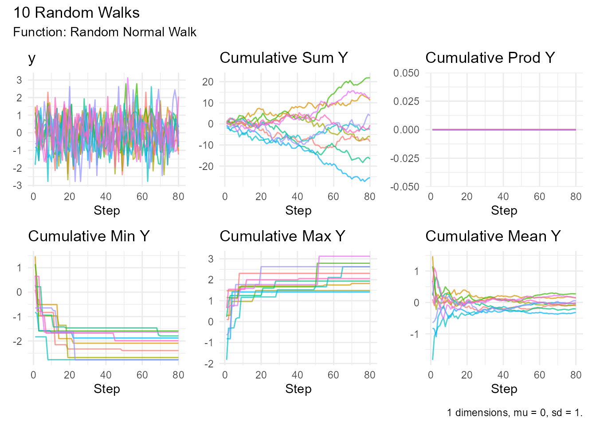
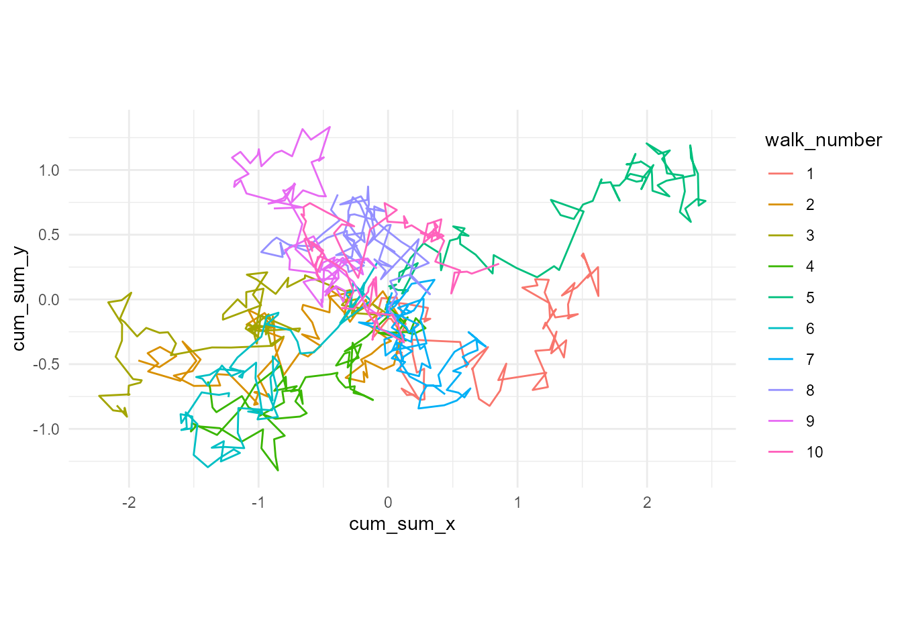
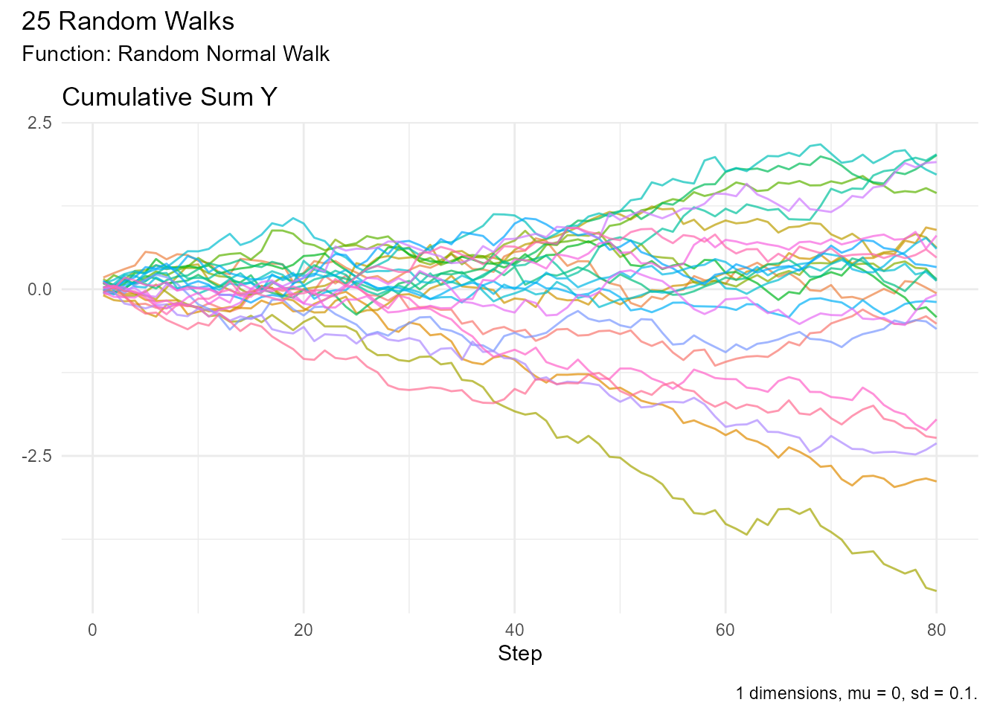
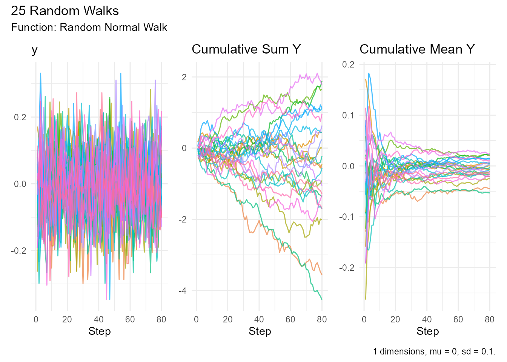
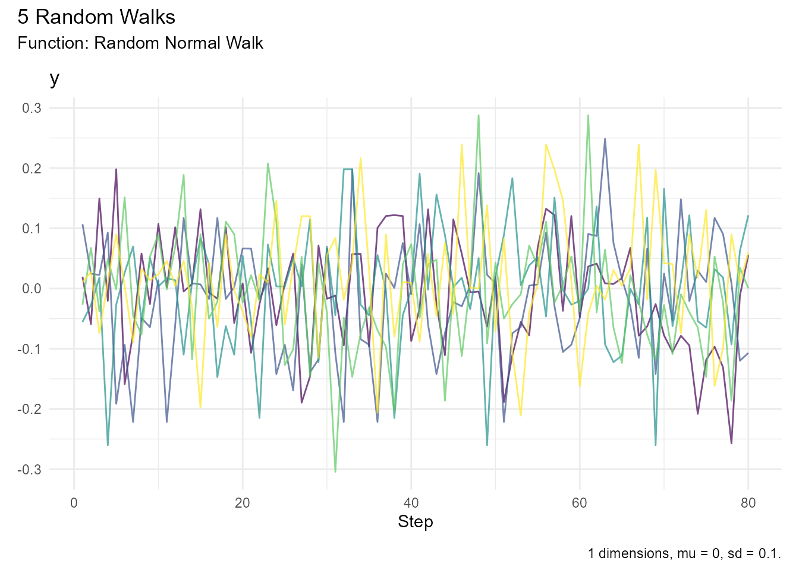
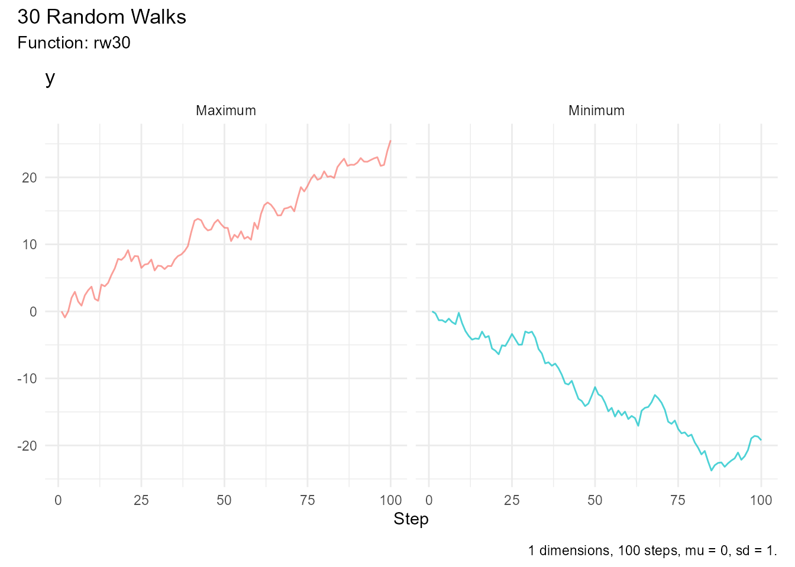
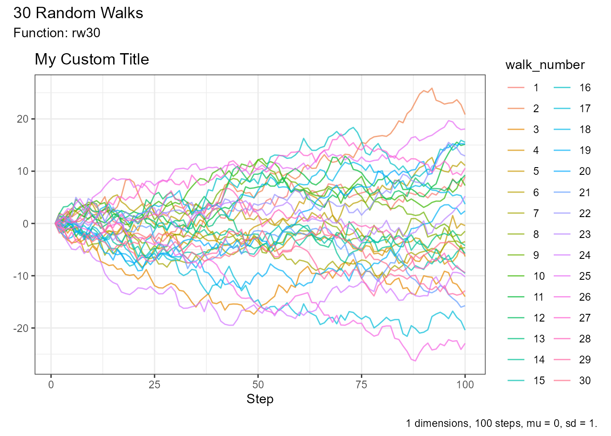
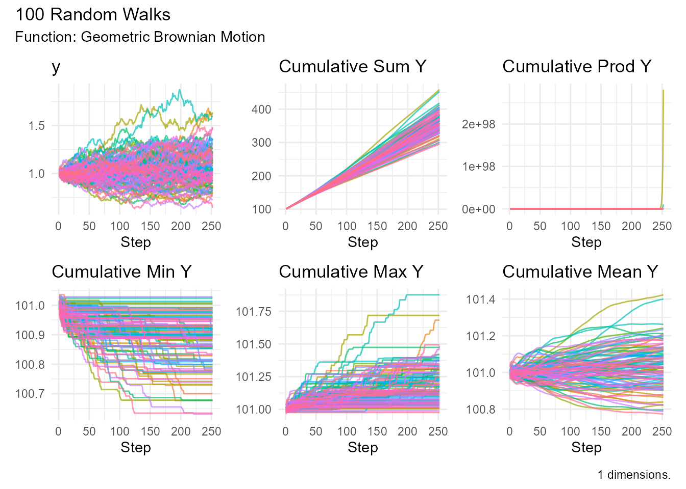

Quick answers to common questions about RandomWalker.
General Questions
What is RandomWalker?
RandomWalker is an R package for generating, visualizing, and analyzing random walks. It supports 27+ probability distributions, multi-dimensional walks (1D, 2D, 3D), and provides tidyverse-compatible functions for data manipulation and analysis.
Who should use RandomWalker?
RandomWalker is useful for: - Researchers: Modeling stochastic processes, simulating experiments - Students: Learning probability and statistics - Data Scientists: Generating synthetic data, testing algorithms - Financial Analysts: Modeling asset prices, risk analysis - Physicists/Biologists: Simulating particle movement, organism behavior - Educators: Teaching probability concepts
Installation Questions
How do I install RandomWalker?
# From CRAN (stable)
install.packages("RandomWalker")
# From GitHub (development)
devtools::install_github("spsanderson/RandomWalker")Why am I getting dependency errors?
Try installing dependencies manually:
install.packages(c("dplyr", "tidyr", "purrr", "rlang", "patchwork", "NNS", "ggiraph"))Usage Questions
How do I generate a simple random walk?
library(RandomWalker)
rw30() |> head(10) # Generates 30 walks with 100 steps each
#> # A tibble: 10 × 3
#> walk_number step_number y
#> <fct> <int> <dbl>
#> 1 1 1 0
#> 2 1 2 -1.40
#> 3 1 3 -1.14
#> 4 1 4 -3.58
#> 5 1 5 -3.59
#> 6 1 6 -2.97
#> 7 1 7 -1.82
#> 8 1 8 -3.64
#> 9 1 9 -3.89
#> 10 1 10 -4.13How do I create a custom random walk?
Use one of the generator functions:
random_normal_walk(
.num_walks = 10,
.n = 100,
.mu = 0,
.sd = 1,
.initial_value = 0
) |> visualize_walks()
Distribution Questions
Which distribution should I use?
It depends on your use case:
-
General purpose:
random_normal_walk() -
Stock prices:
geometric_brownian_motion() -
Particle diffusion:
brownian_motion() -
Binary outcomes:
discrete_walk() -
Heavy tails:
random_cauchy_walk()orrandom_t_walk() -
Count data:
random_poisson_walk()
What’s the difference between random_normal_walk() and
brownian_motion()?
Both use normal distributions, but: -
random_normal_walk(): Discrete steps, cumulative sum -
brownian_motion(): Continuous-time stochastic process,
includes drift (μ) and volatility (σ) parameters
For most purposes, they’re similar. Use
brownian_motion() for financial modeling.
What’s the difference between brownian_motion() and
geometric_brownian_motion()?
-
Brownian Motion: Can go negative, additive process
X(t) = X(0) + μt + σW(t) -
Geometric Brownian Motion: Always positive, multiplicative process
X(t) = X(0) exp((μ - σ²/2)t + σW(t))
Use Geometric Brownian Motion for modeling stock prices (can’t go negative).
Can I use custom distributions?
Yes! Use custom_walk():
# Custom displacement function
my_displacement <- function() {
# Your custom logic here
return(some_value)
}
custom_walk(
.num_walks = 10,
.n = 100,
.custom_fns = my_displacement
)Multi-Dimensional Questions
How do I create a 2D random walk?
Add .dimensions = 2:
random_normal_walk(.num_walks = 10, .n = 100, .dimensions = 2)
#> # A tibble: 800 × 14
#> walk_number step_number x y cum_sum_x cum_sum_y cum_prod_x
#> <fct> <int> <dbl> <dbl> <dbl> <dbl> <dbl>
#> 1 1 1 -0.220 -0.119 -0.220 -0.119 0
#> 2 1 2 -0.0624 0.0535 -0.283 -0.0658 0
#> 3 1 3 -0.220 0.179 -0.503 0.113 0
#> 4 1 4 0.146 0.0317 -0.357 0.145 0
#> 5 1 5 -0.0783 -0.0700 -0.435 0.0749 0
#> 6 1 6 -0.147 -0.00606 -0.582 0.0689 0
#> 7 1 7 -0.00374 -0.0842 -0.586 -0.0154 0
#> 8 1 8 0.170 -0.115 -0.416 -0.130 0
#> 9 1 9 -0.0349 0.0425 -0.451 -0.0880 0
#> 10 1 10 -0.0472 -0.119 -0.498 -0.207 0
#> # ℹ 790 more rows
#> # ℹ 7 more variables: cum_prod_y <dbl>, cum_min_x <dbl>, cum_min_y <dbl>,
#> # cum_max_x <dbl>, cum_max_y <dbl>, cum_mean_x <dbl>, cum_mean_y <dbl>How do I visualize 2D walks?
library(ggplot2)
walk_2d <- random_normal_walk(.num_walks = 10, .n = 100, .dimensions = 2)
ggplot(walk_2d, aes(x = cum_sum_x, y = cum_sum_y, color = walk_number)) +
geom_path() +
coord_equal() +
theme_minimal()
Visualization Questions
How do I make interactive plots?
Add .interactive = TRUE:
rw30() |> visualize_walks(.interactive = TRUE)How do I show only specific panels?
Use .pluck:
# Single panel
random_normal_walk() |> visualize_walks(.pluck = "cum_sum")
# Multiple panels
random_normal_walk() |> visualize_walks(.pluck = c("y", "cum_sum", "cum_mean"))
How do I adjust transparency?
Use .alpha:
rw30() |> visualize_walks(.alpha = 0.3) # More transparent
rw30() |> visualize_walks(.alpha = 0.9) # More opaqueHow do I export plots?
library(ggplot2)
p <- rw30() |> visualize_walks()
ggsave("my_plot.png", p, width = 12, height = 8, dpi = 300)Can I customize colors?
Yes, using ggplot2:
p <- random_normal_walk(.num_walks = 5) |>
visualize_walks(.pluck = "y")
p + scale_color_viridis_d()
Statistical Analysis Questions
How do I get summary statistics?
walks <- rw30()
# Overall summary
walks |> summarize_walks(.value = y)
#> Registered S3 method overwritten by 'quantmod':
#> method from
#> as.zoo.data.frame zoo
#> Warning: There was 1 warning in `dplyr::summarize()`.
#> ℹ In argument: `geometric_mean = exp(mean(log(y)))`.
#> Caused by warning in `log()`:
#> ! NaNs produced
#> # A tibble: 1 × 16
#> fns fns_name dimensions mean_val median range quantile_lo quantile_hi
#> <chr> <chr> <dbl> <dbl> <dbl> <dbl> <dbl> <dbl>
#> 1 rw30 Rw30 1 -1.09 -1.02 46.9 -12.6 11.5
#> # ℹ 8 more variables: variance <dbl>, sd <dbl>, min_val <dbl>, max_val <dbl>,
#> # harmonic_mean <dbl>, geometric_mean <dbl>, skewness <dbl>, kurtosis <dbl>
# By walk
walks |> summarize_walks(.value = y, .group_var = walk_number) |> head()
#> Warning: There were 29 warnings in `dplyr::summarize()`.
#> The first warning was:
#> ℹ In argument: `geometric_mean = exp(mean(log(y)))`.
#> ℹ In group 1: `walk_number = 1`.
#> Caused by warning in `log()`:
#> ! NaNs produced
#> ℹ Run `dplyr::last_dplyr_warnings()` to see the 28 remaining warnings.
#> # A tibble: 6 × 17
#> walk_number fns fns_name dimensions mean_val median range quantile_lo
#> <fct> <chr> <chr> <dbl> <dbl> <dbl> <dbl> <dbl>
#> 1 1 rw30 Rw30 1 5.98 7.45 20.1 -3.74
#> 2 2 rw30 Rw30 1 -4.14 -4.44 9.07 -7.77
#> 3 3 rw30 Rw30 1 -6.56 -6.94 11.7 -10.9
#> 4 4 rw30 Rw30 1 -1.04 -1.05 6.63 -3.40
#> 5 5 rw30 Rw30 1 2.89 2.22 17.4 -3.46
#> 6 6 rw30 Rw30 1 -4.08 -4.59 14.0 -9.72
#> # ℹ 9 more variables: quantile_hi <dbl>, variance <dbl>, sd <dbl>,
#> # min_val <dbl>, max_val <dbl>, harmonic_mean <dbl>, geometric_mean <dbl>,
#> # skewness <dbl>, kurtosis <dbl>What statistics are included?
- Mean, median, range
- Variance, standard deviation
- Quantiles (2.5% and 97.5% by default)
- Min, max
- Harmonic mean, geometric mean
- Skewness, kurtosis
How do I subset walks by extremes?
walks <- rw30()
# Get walk with maximum final value
max_walk <- walks |> subset_walks(.value = "y", .type = "max")
# Get walk with minimum final value
min_walk <- walks |> subset_walks(.value = "y", .type = "min")
# Visualize both walks together
combined <- dplyr::bind_rows(
dplyr::mutate(max_walk, type = "Maximum"),
dplyr::mutate(min_walk, type = "Minimum")
)
visualize_walks(combined, .pluck = "y") +
ggplot2::facet_wrap(~type)
Performance Questions
How many walks can I generate?
This depends on your system, but RandomWalker can handle: - Light: 1,000 walks × 1,000 steps each - Moderate: 10,000 walks × 10,000 steps each - Heavy: 100,000+ walks with careful memory management
My visualization is slow. How do I speed it up?
-
Reduce transparency:
.alpha = 0.2 - Sample walks: Show fewer walks
- Downsample steps: Keep every nth step
-
Use static plots: Disable
.interactive
# Sample walks
walks_large |>
filter(walk_number %in% sample(levels(walk_number), 50)) |>
visualize_walks(.alpha = 0.2)
# Downsample steps
walks_large |>
filter(step_number %% 10 == 0) |>
visualize_walks()Can I parallelize generation?
The functions are vectorized, but you can use parallel processing:
library(future)
library(furrr)
plan(multisession, workers = 4)
walks_list <- future_map(1:10, ~random_normal_walk(.num_walks = 100), .options = furrr_options(seed = 123))Data Structure Questions
What format does RandomWalker return?
A tibble (tidyverse-compatible data frame) with columns: -
walk_number (factor) - step_number (integer) -
Value columns (y for 1D, x/y for
2D, x/y/z for 3D) - Cumulative
function columns
How do I access attributes?
walks <- rw30()
atb <- get_attributes(walks)
names(atb)
#> [1] "names" "class" "num_walks" "num_steps" "mu" "sd"
#> [7] "fns" "dimension"Common attributes: fns, num_walks,
n, initial_value, distribution parameters.
Can I convert to other formats?
Yes:
# To base R data.frame
as.data.frame(walks)
# To matrix (values only)
walks |> select(y) |> as.matrix()
# To time series
ts(walks$y, frequency = 1)
# To wide format
walks |> tidyr::pivot_wider(names_from = walk_number, values_from = y)Error Messages
“The value to summarize must be provided”
You forgot to specify .value in
summarize_walks():
# Wrong
walks |> summarize_walks()
# Correct
walks |> summarize_walks(.value = y)“object ‘y’ not found”
You might be using a 2D/3D walk where y refers to a
dimension. Use cum_sum_y or specify dimensions:
walk_2d <- random_normal_walk(.dimensions = 2)
# Wrong
walk_2d |> summarize_walks(.value = y)
# Correct
walk_2d |> summarize_walks(.value = cum_sum_y)Integration Questions
Does RandomWalker work with dplyr?
Yes! RandomWalker is designed for tidyverse:
library(dplyr)
random_normal_walk(.num_walks = 10) |>
filter(step_number > 50) |>
mutate(positive = cum_sum_y > 0) |>
group_by(walk_number) |>
summarize(prop_positive = mean(positive))
#> # A tibble: 10 × 2
#> walk_number prop_positive
#> <fct> <dbl>
#> 1 1 0.9
#> 2 2 1
#> 3 3 1
#> 4 4 1
#> 5 5 1
#> 6 6 0
#> 7 7 1
#> 8 8 0
#> 9 9 1
#> 10 10 0.1Can I use it in Shiny apps?
Yes:
library(shiny)
library(RandomWalker)
ui <- fluidPage(
numericInput("num_walks", "Number of Walks:", 10),
plotOutput("walks_plot")
)
server <- function(input, output) {
output$walks_plot <- renderPlot({
random_normal_walk(.num_walks = input$num_walks) |>
visualize_walks(.pluck = "cum_sum")
})
}
shinyApp(ui, server)Can I use it with ggplot2?
Yes, visualize_walks() returns ggplot2 objects:
library(ggplot2)
p <- rw30() |> visualize_walks(.pluck = "y")
# Customize further
p +
labs(title = "My Custom Title") +
theme_bw()
Application Questions
How do I model stock prices?
Use Geometric Brownian Motion:
stock_prices <- geometric_brownian_motion(
.num_walks = 100,
.n = 252, # Trading days
.mu = 0.08, # 8% expected return
.sigma = 0.25, # 25% volatility
.initial_value = 100
)
visualize_walks(stock_prices)
How do I simulate particle diffusion?
Use Brownian Motion in 2D or 3D:
particles <- brownian_motion(
.num_walks = 50,
.n = 1000,
.dimensions = 3
)How do I test an algorithm?
Generate synthetic data:
# Generate test walks
test_data <- discrete_walk(
.num_walks = 1000,
.n = 100,
.upper_probability = 0.5
)
# Run your algorithm
result <- my_algorithm(test_data)Getting Help
Where can I find more examples?
- Getting Started Vignette - Basic examples
- Package Documentation - Function reference
- GitHub Repository - Real-world applications
Where can I ask questions?
- GitHub Discussions
- Stack Overflow (use
randomwalkertag) - Email: spsanderson@gmail.com
How do I cite RandomWalker?
citation("RandomWalker")Is there a community?
Yes! Join us on: - GitHub Discussions - Follow @spsanderson on Twitter
Contributing
Can I contribute?
Yes! We welcome contributions: - Bug reports - Feature requests - Code contributions - Documentation improvements - Examples and tutorials
How do I suggest a new feature?
Open an issue on GitHub Issues with: - Clear description of the feature - Use cases - Example code (if applicable)
Related Questions
What’s the difference between RandomWalker and other R packages?
RandomWalker is unique in: - Tidyverse compatibility - 27+ distributions in one package - Multi-dimensional support (1D/2D/3D) - Rich visualization capabilities - Comprehensive statistical analysis tools - Consistent API across all functions
Can RandomWalker handle big data?
Yes, but: - Use efficient data structures (tibbles) - Sample or downsample for visualization - Consider parallel processing for generation - Use appropriate hardware
Is RandomWalker actively maintained?
Yes! The package is actively developed with: - Regular updates - Bug fixes - New features - Community support
Check NEWS.md for latest updates.
Didn’t find your answer? Ask on GitHub Discussions!